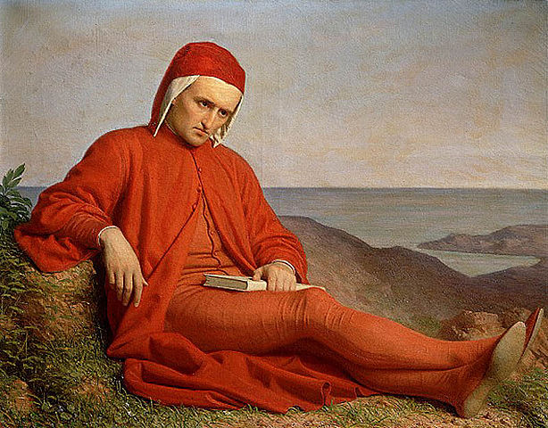

| SA VIE | |||
|
|||
| SON ŒUVRE | |||
|

 |
Dante de Botticelli (1495) |
Ses jeunes années Issu d'une famille de la petite noblesse, Dante Alighieri naquit à Florence dans la seconde quinzaine du mois de mai 1265. Sa mère mourut alors qu'il était âgé de treize ans, et son père décéda quand il en avait dix-sept. L'événement le plus important de sa jeunesse fut sa rencontre, en 1274, avec Béatrice, jeune femme qu'il aima et qu'il exalta comme un symbole de la grâce divine dans la Vita nuova (littéralement, « la Nouvelle Vie ») et plus tard dans la Divine Comédie, son œuvre la plus connue. Célèbre par ce prénom emblématique, celle qui inspira Dante ne possède pas d'identité historique certaine, mais des chercheurs l'ont identifiée à Beatrice Portinari, une femme de la noblesse florentine qui mourut en 1290 à l'âge de vingt ans. Si l'on en croit ses œuvres, Dante ne la connaissait pas ; il l'aperçut seulement à trois reprises, sans jamais lui adresser la parole. On sait peu de choses sur l'éducation que reçut le poète, sinon qu'il séjourna à Bologne aux environs de 1285, pour y accomplir des études supérieures. Quoi qu'il en soit, son œuvre révèle une érudition telle qu'elle couvre presque tout le savoir de son époque. Dante fut particulièrement influencé par les travaux du philosophe et rhétoricien florentin Brunetto Latini, qui tient d'ailleurs une place importante dans la Divine Comédie. Il fréquenta nombre de poètes et se lia en particulier avec Guido Cavalcanti et Cino de Pistoia. Florence était alors une des cités les plus puissantes de l'Italie, mais elle était également divisée par des conflits de pouvoir entre les partisans de deux puissantes familles, les guelfes et les gibelins. Dante fut d'abord partisan des guelfes et, en juin 1289, il se trouva aux côtés de l'armée des guelfes de Florence lors de la bataille de Campaldino. Dans cette bataille, les Florentins triomphèrent d'une manière décisive des troupes des gibelins de Pise et d'Arezzo, mais les vainqueurs se divisèrent bientôt entre « noirs » et « blancs » — c'est d'ailleurs comme « blanc » que Dante devait être plus tard condamné et banni. À cette époque, Dante épousa Gemma Donati, qui était issue d'une famille guelfe jouissant d'une position très importante à Florence. |
 |
Dante Alighieri de Agnolo Bronzino (1530) |
Sa vie politique Durant les quelques années qui suivirent — de 1295 à 1301 environ —, Dante participa activement à la vie politique tourmentée de Florence ; des registres de 1295 indiquent qu'il occupa plusieurs fonctions dans l'administration. Il fut notamment envoyé (1300) en mission diplomatique à San Gimignano, petit village toscan et, la même année, il fut élu au Conseil avec cinq autres personnes, en qualité de prieur, c'est-à-dire de magistrat, mais il n'occupa ce poste que pendant deux mois. La rivalité entre les deux factions qui divisaient les guelfes à Florence s'intensifia durant la période de son mandat. Les « noirs », opposés au pouvoir impérial, considéraient le pape comme un allié, tandis que les « blancs » voulaient rester indépendants du pape comme de l'empereur. Afin de préserver la paix dans la cité, le Conseil décida d'exiler les dirigeants des deux partis. Mais, par l'entremise du pape Boniface VIII, les chefs des « noirs » purent regagner Florence à la fin de 1301, et s'emparèrent du pouvoir. En mars 1302, alors que le poète était en mission à Rome auprès du pape, ils le bannirent de la ville pour une durée de deux ans et le condamnèrent à une lourde amende. Comme Dante était dans l'impossibilité de régler la somme demandée, la sanction fut commuée en peine de mort s'il revenait dans sa ville natale. Après cet épisode, Dante garda à tout jamais le sentiment d'avoir été abusé par Boniface VIII. Il passa ses années d'exil à Vérone, ainsi que dans d'autres villes du nord de l'Italie, mais on sait qu'il séjourna à Paris entre 1307 et 1309. Ses convictions politiques se modifièrent : embrassant finalement la cause des gibelins, il espérait désormais voir émerger une union européenne gouvernée par un empereur éclairé. Les aspirations politiques du poète furent stimulées par l'arrivée en Italie d'Henri VII de Luxembourg, empereur du Saint Empire romain germanique (1310), dont l'objectif était de placer l'Italie sous sa souveraineté. Dans cette période d'intense activité politique, Dante écrivit à de nombreux princes et dirigeants politiques italiens pour les exhorter à accueillir Henri VII, considérant la suzeraineté de celui-ci comme le moyen de parvenir à résoudre les conflits aigus entre cités. Le décès de l'empereur, survenu à Sienne en 1313, détruisit tous ses espoirs. C'est probablement durant le séjour d'Henri VII en Italie qu'il rédigea un traité en latin, la Monarchie universelle (v. 1313), qui est un exposé de sa philosophie politique ; il soutenait encore l'idée d'une séparation totale de l'Église et de l'État. |
|  |
Dante Alighieri en exil de Domenico Pelarlini |
Son exil En 1316, les autorités de Florence proposèrent au poète de regagner la cité, mais les conditions offertes étaient celles généralement réservées aux criminels amnistiés. Dante refusa violemment cette proposition, affirmant qu'il ne reviendrait dans sa ville natale qu'avec toute la dignité et tous les honneurs qui lui étaient dus. De fait, il demeura en exil jusqu'à la fin de sa vie, et passa ses dernières années à Ravenne, où il mourut dans la nuit du 13 au 14 septembre 1321. Depuis, Ravenne ne s'est jamais dessaisie de ses restes, malgré la volonté des Florentins de le voir inhumé en leur cité. À défaut, sa ville natale a élevé dans l'église de Santa Croce un cénotaphe à sa mémoire. |